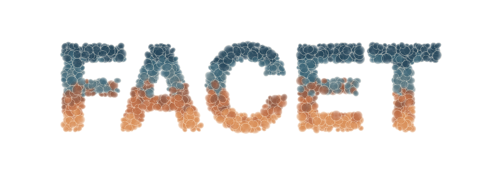
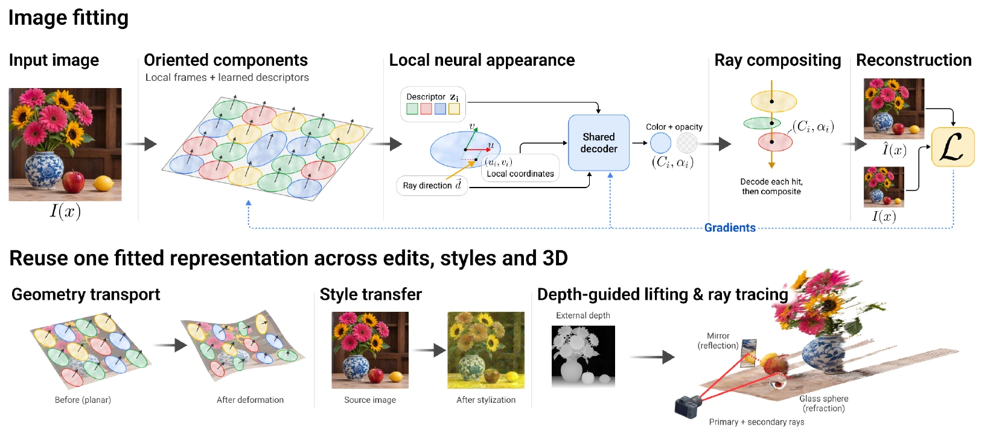

Fit in local coordinates
Optimize the planar geometry, descriptors, and shared decoder against the input image. Composite the decoded hits in ray order.
Flat Anisotropic Components for Editing and Tracing

Ray-Traceable Local Implicit NeuralOverview
Fit a photo once, then bend it, drive it with a simulation, or lift it into depth. FACET stores appearance in the local coordinates of movable planar components, so fitted detail follows the geometry.
After lifting, camera rays and secondary rays query the same appearance field. Lights, mirrors, and glass can interact with the fitted image in the same scene.
Method
Every component carries a local frame and a compact descriptor. One shared neural decoder maps each ray hit in that frame to color and opacity.

Optimize the planar geometry, descriptors, and shared decoder against the input image. Composite the decoded hits in ray order.
Move the centers and transport the local axes and scales through each warp. The same decoder preserves the fitted pattern as components deform.
Use an external depth map to place the components in 3D. Added lights and objects produce shadows, reflections, refractions, and caustics.
Applications
Explore the same edits across methods, then see how lifted images respond to lights, a thin lens, and inserted objects.
Both representations follow the same simulated cloth mesh and camera.
A prescribed fold carries the fitted image along the paper.
The fitted image follows an origami fold into a paper plane.
The image is restyled after The Starry Night, then animated with a sand simulation.
A new light sweeps across the same image kept flat and lifted with Depth Pro.
Ray-traced glass refracts the lifted scene.
A thin-lens camera sweeps the focus across the lifted scene.
A planar mirror reveals the anamorphic skull in the depth-lifted painting.
FACET and GaINeR share a source view, depth map, and camera path for each comparison.
The local frames rotate with the swirl, carrying fitted detail through the turn.
Transporting the frames scales the component supports as the image stretches.
Both methods use the same brush strokes.
Results
FACET reaches higher mean PSNR with a smaller inference state than the two closest editing-oriented baselines in the reconstruction experiments.
| Method | Kodak-24 PSNR (dB) | DIV2K-100 PSNR (dB) | Memory (MB) |
|---|---|---|---|
| MiraGe | 71.33 | 65.66 | 212.7 / 258.9 |
| GaINeR | 72.97 | 61.34 | 44.1 / 44.1 |
| FACET (ours) | 81.35 | 70.29 | 28.0 / 28.0 |
FACET is an editable image representation that pairs oriented planar components with continuous neural appearance. A decoder shared across components predicts color and opacity from local coordinates and compact descriptors. Basing appearance in each component’s frame lets detail move with the surface through planar edits, mesh-driven simulation, and depth-guided lifting. The lifted components can be queried by reflected and refracted rays alongside conventional mesh objects. On Kodak-24 and DIV2K-100, FACET improves reconstruction quality and reduces inference size compared with the evaluated editing-oriented baselines. Controlled edits and novel views further demonstrate appearance preservation.